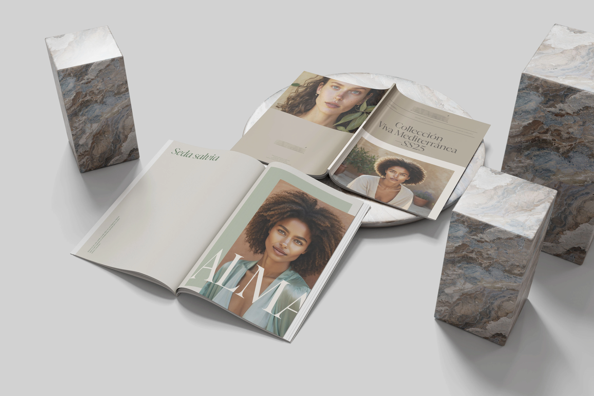

INTRO
A womenswear brand with a strong focus on sustainability needed to present the SS25 collection with a lookbook able to raise perceived value and desirability, paired with an Instagram Kit to support a consistent digital launch. The work focused on creative direction for graphic design and layout, aiming to make the brand feel more contemporary without losing its essence.
A womenswear brand with a strong focus on sustainability needed to present the SS25 collection with a lookbook able to raise perceived value and desirability, paired with an Instagram Kit to support a consistent digital launch. The work focused on creative direction for graphic design and layout, aiming to make the brand feel more contemporary without losing its essence.

THE CHALLENGE
In a crowded space, “green” codes often slip into cold minimalism or predictable clichés. We needed a warm editorial language, instantly recognisable across print and social, while meeting tight deadlines for the upcoming Madrid event and production requirements.
In a crowded space, “green” codes often slip into cold minimalism or predictable clichés. We needed a warm editorial language, instantly recognisable across print and social, while meeting tight deadlines for the upcoming Madrid event and production requirements.

THE SOLUTION
We built an editorial framework that elevates brand perception and holds up both in print and on Instagram. The work unfolded in 5 design moves:
We built an editorial framework that elevates brand perception and holds up both in print and on Instagram. The work unfolded in 5 design moves:
- Guiding idea — Set a “warm editorial” direction: quiet elegance, calm pacing, no “green” clichés. This informed every subsequent visual choice.
- Content architecture — Organised the provided assets (images and copy) into a clear sequence: strong opener → alternation of full looks and details → values page → closing. Each spread has a purpose (introduction, depth, breathing space).
- Image selection & sequencing — Curated the lookbook’s pacing: hero images for entry, details for material/craft, restrained compositions to avoid shouting. Cropping and alignments crafted for narrative continuity.
- Typographic system & hierarchy — Modern serif for authority in headings, clean sans for clarity in body; clear hierarchy to guide the eye. Generous white space to let garments and information breathe.
- Translation to social (IG Kit) — Derived modules from the lookbook into coherent templates for posts and stories: same hierarchy, proportions, and safe areas for short copy and call-to-action. Goal: instant recognition and a seamless handoff between channels.
RESULT
Within two weeks, the materials were ready for the Madrid launch with a professional, cohesive presence. The coordinated lookbook and IG kit sharpened brand perception, ensured continuity across touchpoints, and drew positive feedback from buyers and press.
Within two weeks, the materials were ready for the Madrid launch with a professional, cohesive presence. The coordinated lookbook and IG kit sharpened brand perception, ensured continuity across touchpoints, and drew positive feedback from buyers and press.